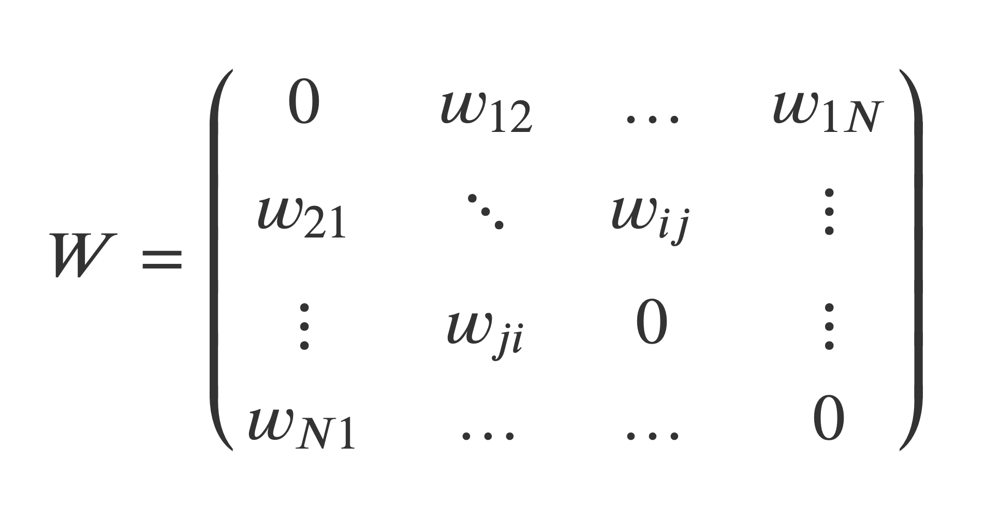
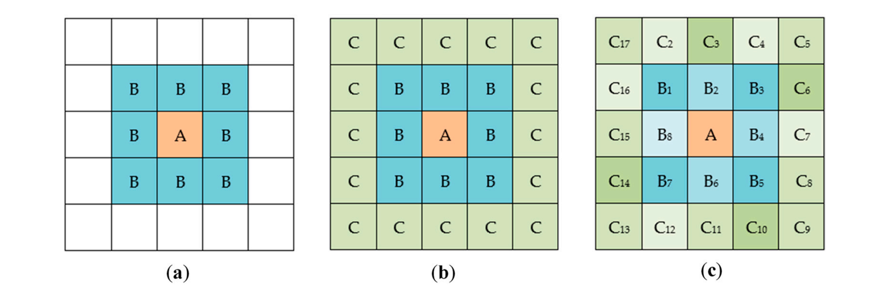
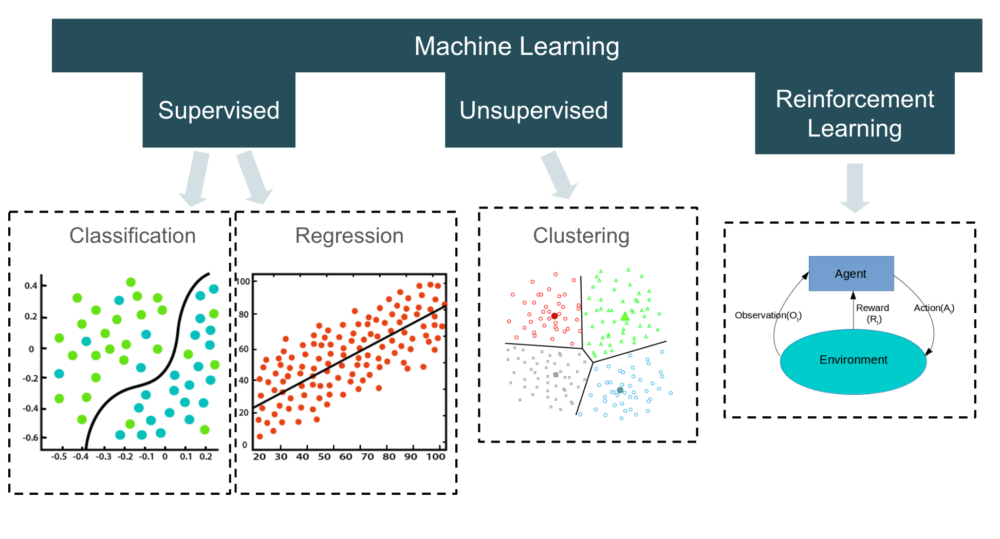
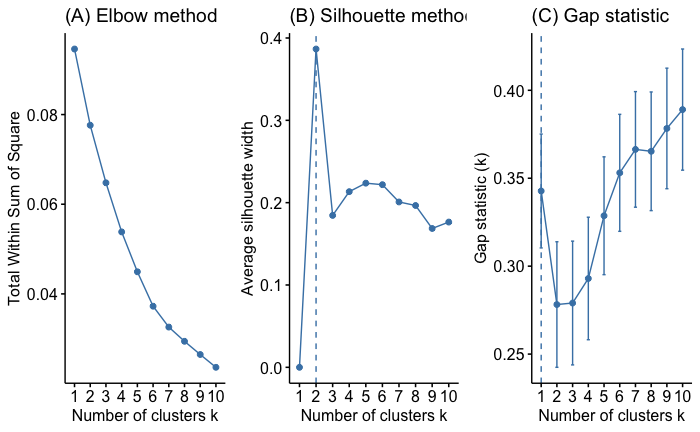

Diversity in cities
What is Diversity in Cities?
What is Diversity in Cities?
People > Population Diversity
Firms, businesses & institutions > Economic Diversity
Urban landscape > Morphological Diversity
Animals & Plants > Species diversity
What is Diversity in Cities?
In general: ’The state of being diverse‘
With Spatial context: ’The state of being diverse at one location OR throughout a geographical area
In context of cities: ‘The state of being divrse within within and between urban places’
Why is diversity important?
- concentration of diverse entities (people, firms, and other) at location promotes creativity and innovation
In practice
Concentration/number & lack thereof
Spread - homogeneity and heterogeneity
Spillover - Geographical relation to concetration results in
General diversity measures
For example Spieces richness…
… aka variety
\(D = \sum_{i}^n p_{i}^0\)
\(p_i\) is the proportion of data points in the \(i\)th category
\(n\) is the number of total categories
A count of different species / categories / …
Interpretation:
Plurality
Availability of options
General diversity measures
OR Shannon entropy
\(H = -\sum_{i}^n p_{i} \ln{p_{i}}\)
\(n\) is the number of total categories
\(p_i\) is the proportion of data points in the \(i\)th category
Probably the most common diversity index.
Interpretation:
If one category dominates ➔ less surprise ➔ low entropy
No category dominates ➔ more surprise ➔ high entropy
Economic Diversity
- High concentration, high diversity promotes collaboration and allows for economies of scale and economic growth
Economic Diversity
Marshalllian externalities - benefits gained from geographical agglomeration
For example: Knowledge spillover, production spillover, …
Jacobian externalities - benefits gained from the diversity of economic activities within geography
For example: Knowledge concentration correlated with production concentration
Knowledge spillovers
Example of method: Spatial weights


Population Diversity
Cities are generators of cosmopolitanism
‘cosmos’ + ‘polis’
‘world’ + ‘city’
city of the world
cosmopolite = citizen of the word
cosmoplitan = being part of the world, free from local attachments and prejudices
Population Diversity
Chicago School - mosaic - spatial ecology
massive number of segregation studies > ‘The ethnic city’
https://interactive.wttw.com/firsthand/segregation/mapping-chicago-racial-segregation
Population Diversity
Later on shift >
- exchancge
- convivality
- multiculture
- spaces of difference
- engaging strangers
Population Diversity
Steven Vertovec - Diversity and Contact
watch Stevens’ lecture on Diversity - https://www.youtube.com/watch?v=n7hKmjXcsJg&t=361s&ab_channel=DesignServer
Diversity is not just about the ‘cosmo’
It can have negative effects such as ‘halo effect’ = xenofobic populism is highest in areas close to highly diverse or changing areas
Mapping Diversity
Plotting the diversity metrics (shannon entropy, rates,…)
Clustering
Clustering
Clustering
Reducing the dimensions of the observation space
Classification of observations into (exclusive) groups
Distance or (dis)similarity between each pair of observations to create a distance or dissimilarity or matrix
Observations within the same group are as similar as possible
Plenty of other resources online and in textbooks
Clustering
Hierarchical
k means
dbscan
Clustering
Hierarchical clustering

Source: @boehmke2019hands
Agglomerative clustering (AGNES – AGglomerative NESting)
Divisive hierarchical clustering (DIANA – DIvise ANAlysis)
Dissimilarity (distance) of observations
Clustering
K-Means
k is the number of clusters and is pre-defined
The algorithm selects k random observations (starting centres)
The remaining observations are assigned to the nearest centre
Recalculates the new centres
Re-check cluster assignment
Iterative process to minimise within-cluster variation until convergence
\(SS_{within} = \sum_{k=1}^k W(C_{k}) = \sum_{k=1}^k \sum_{x_i\in C_K}(x_i-\mu_k)^2\)
Clustering
K-Means in practice
stats::kmeans(x, centers = k, iter.max = 10, nstart = 1, algorithm = c(“Hartigan-Wong”, “Lloyd”, “Forgy”,“MacQueen”))
How to choose k ?
The elbow method
Silhouette score/coefficient
Gap statistics
How to choose k ?
The elbow method
Compute k-means clustering for different values of k
Calculate \(SS_{within}\) - the sum of square distances between the centroids and each points.
How to choose k ?
- Silhouette score
is a measure of how similar an object is to its own cluster (cohesion) compared to other clusters (separation)
ranges from −1 to +1
How to choose k ?
- Gap statistics
metric that describes how compact the clusters are > minimization problem
computes all the pairwise distances between points within a cluster and average these distances
read the original paper Tibshirani, Walther, and Hastie (2001)
How to choose k ?
Clustering
dbscan or hdbscan
- identifies cluster by the density of the points
for each point constructs buffer with radius r
Counts all the other points within each buffer = N > Core points
Keep constructing buffers to points within the first buffer > iterates
Stops when it cannot expand any more
Clustering
dbscan or hdbscan
Resources: SciKit-learn docs, dbscan package, [Youtube video]{https://www.youtube.com/watch?v=RDZUdRSDOok&ab_channel=StatQuestwithJoshStarmer}, [example K-means vs DBscan]{https://rpubs.com/datalowe/dbscan-simple-example}
Population Diversity
Today the field is more concerned about the process of diversification.
How are diverse environment created?
‘Route-ines’ are patterns of encounter that arise from fleeting interactions
Through ‘rout-ines’ people observe changes in their neighbourhoods and became more familiar with the people around them
Based on Vertovec (2015)
Population Diversity
Rooms without walls - urban spaces where interaction create social spaces and communities > patterns of social interactions
Corridors of dissociation - urban places which are not where people are banned to interact in either by someone, institution or by themselves > patterns of social exclusion
Based on Vertovec (2015)